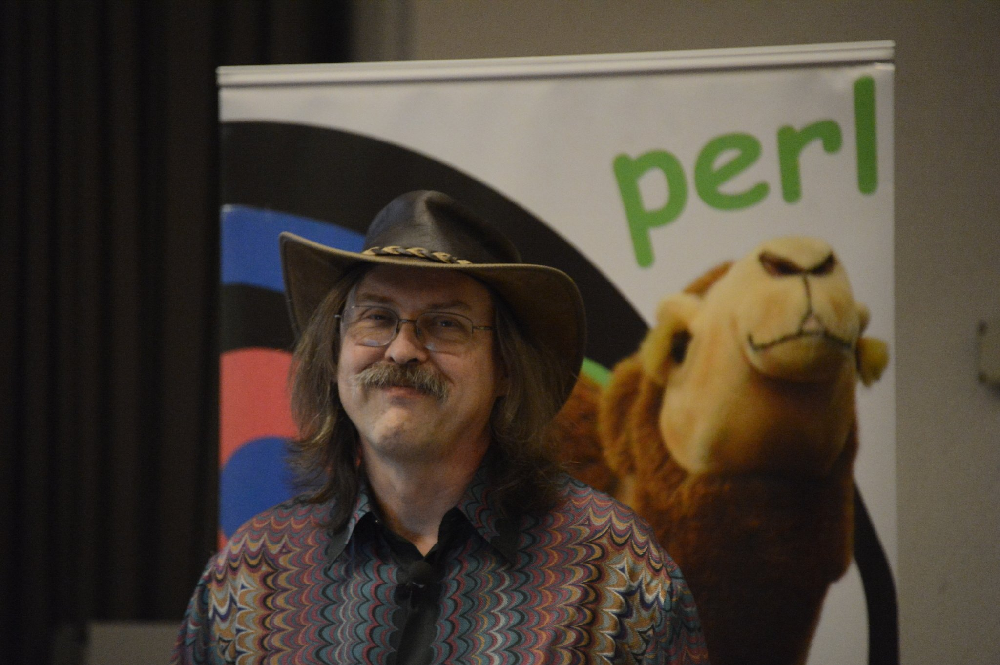

Personal Life
Wall grew up in Los Angeles and then Bremerton, Washington, before starting higher education at Seattle Pacific University in 1976, majoring in chemistry and music and later pre-medicine with a hiatus of several years working in the university's computing center before graduating with a bachelor's degree in Natural and Artificial Languages.
While in graduate school at the University of California, Berkeley, Wall and his wife were studying linguistics with the intention of finding an unwritten language, perhaps in Africa, and creating a writing system for it. They would then use this new writing system to translate various texts into the language, among them the Bible. Due to health reasons these plans were cancelled, and they remained in the United States, where Wall instead joined the NASA Jet Propulsion Laboratory after he finished graduate school.
Wall is an active member of the New Life, Church of the Nazarene. He also works with his local church for Bible Quizzing for the Nor-Cal district.
Accomplishments
Wall is the author of the rn Usenet client and the widely used patch program. He has won the International Obfuscated C Code Contest twice and was the recipient of the first Free Software Foundation Award for the Advancement of Free Software in 1998.
Wall developed the Perl interpreter and language while working for System Development Corporation, which later became part of Burroughs and then Unisys. He is the co-author of Programming Perl (often referred to as the Camel Book and published by O'Reilly), which is the definitive resource for Perl programmers; and edited the Perl Cookbook. He then became employed full-time by O'Reilly Media to further develop Perl and write books on the subject.
Wall's training as a linguist is apparent in his books, interviews, and lectures. He often compares Perl to a natural language and explains his decisions in Perl's design with linguistic rationale. He also often uses linguistic terms for Perl language constructs, so instead of traditional terms such as "variable", "function", and "accessor" he sometimes says "noun", "verb", and "topicalizer".
Wall's Christian faith has influenced some of the terminology of Perl, such as the name itself, a biblical reference to the "pearl of great price" (Matthew 13:46). Similar references are the function name bless, and the organization of Raku (previously known as Perl 6) design documents with categories such as apocalypse and exegesis. Wall has also alluded to his faith when speaking at conferences, including on August 23, 1999, at the Perl Conference 3.0 in Monterey, CA.